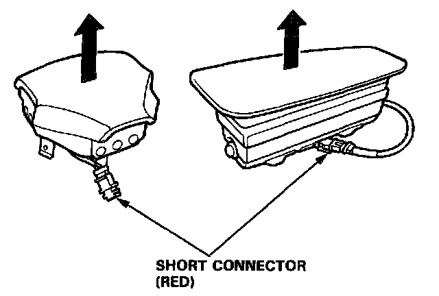

Airbag Handling and Storage
AIRBAG HANDLING AND STORAGEDo not try to disassemble the airbag assembly. If has no serviceable parts. Once an airbag has been operated (deployed), it cannot be repaired or reused.
For temporary storage of the airbag assembly during service, please observe the following precautions:
- Store the removed airbag assembly with the pad surface up.

WARNING: IF THE AIRBAG IS IMPROPERLY STORED FACE DOWN, ACCIDENTAL DEPLOYMENT COULD PROPEL THE UNIT WITH ENOUGH FORCE TO CAUSE SERIOUS INJURY.
- Store the removed airbag assembly on a secure flat surface away from any high heat source (exceeding 212degrees F/100degrees C) and free of any oil, grease, detergent or water.
CAUTION: Improper handling or storage can internally damage the airbag assembly, making it inoperative.
If you suspect the airbag assembly has been damaged, install a new unit and refer to the Deployment/Disposal Procedures for scrapping of the damaged airbag.